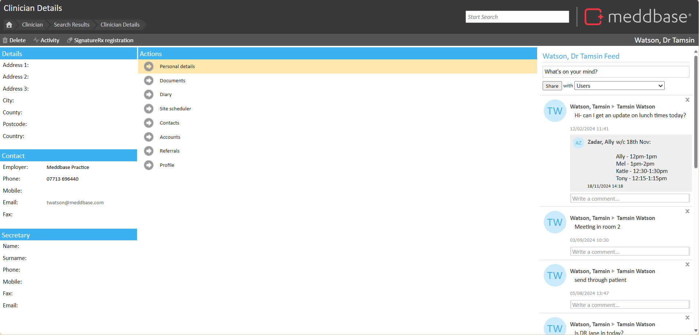
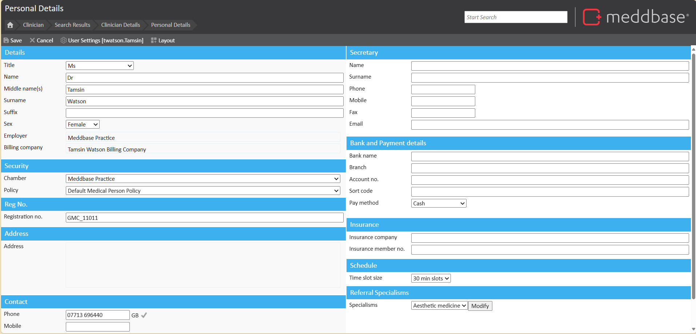
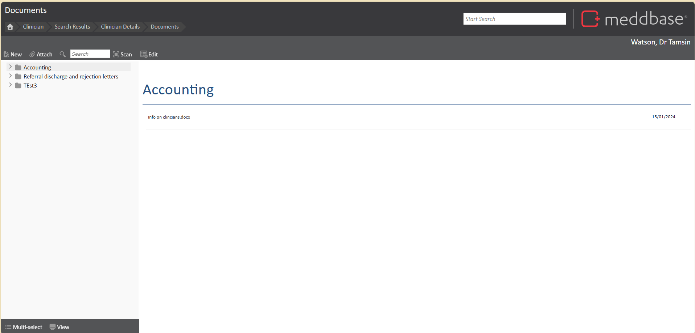
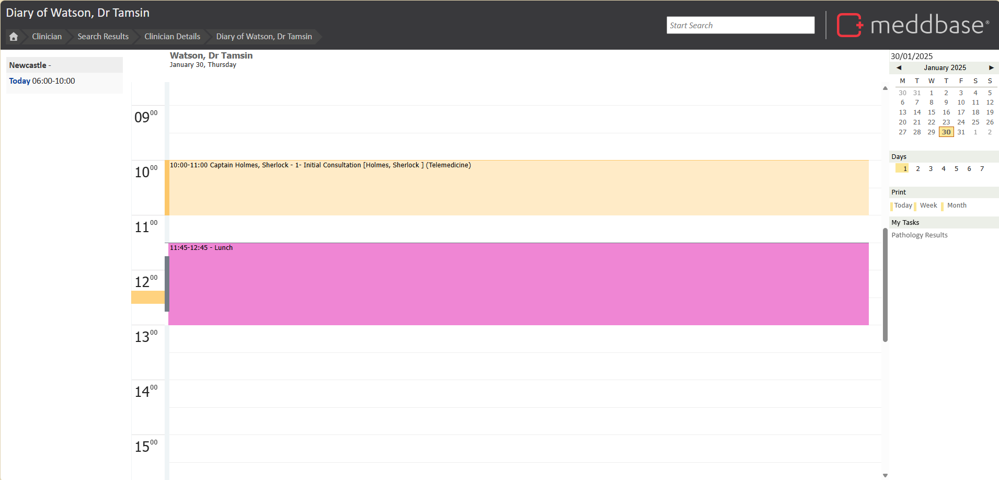
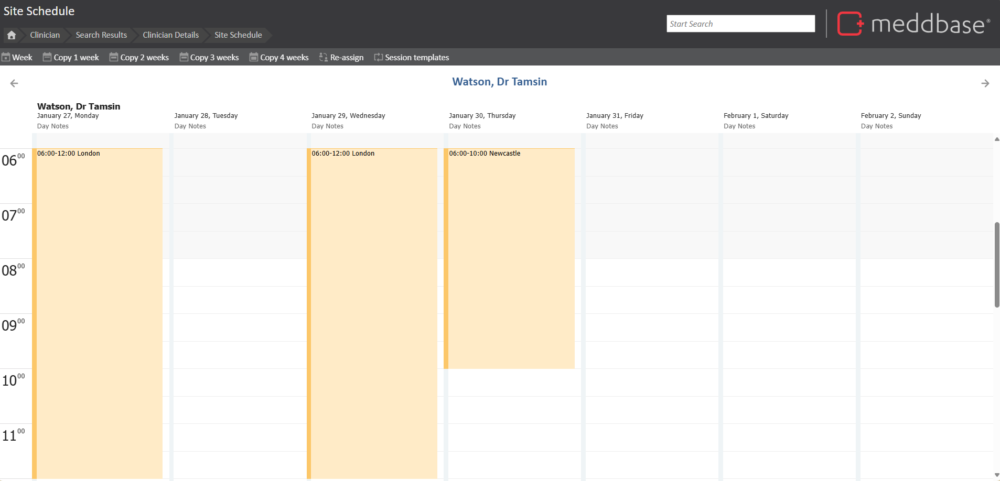

The Clinician Home Page serves as a central hub for managing a clinician's demographic information, availability, and various administrative tasks. It provides easy access to key tools that support day-to-day functions, from reviewing contact details to scheduling meetings.
What is the purpose of the article?
This article explains the Clinician home page and possible actions.
The Clinician Home Page

The Clinician Home Page contains essential demographic information and several tools to manage clinician-related details. Key sections of this page include:
Address Details – View and edit the clinician’s address.
Contact Details – Review and update the clinician’s contact information.
Secretary Contact Details – Access contact details for the clinician’s secretary.
The Clinician’s Message Feed – A section displaying messages and communications related to the clinician.
The ‘Actions’ Pane – A pane providing quick access to essential tools.
From the ‘Actions’ Pane, users can access a range of tools that help manage the clinician’s information and schedule:
Personal Details – Update or adjust the clinician’s demographic information. For more information on the Clinician demographics page, see Adding a Clinician.

Documents – Attach documents specific to the clinician for future reference. To learn more about the documents page, see The Documents Page.

Diary – View upcoming appointments and meetings, and review past ones.

SiteScheduler – Manage and update the clinician’s availability for future appointments. To learn more about Site Scheduler, see Creating and updating Clinician schedules.

Contacts – Add, remove, or view clinician contacts.